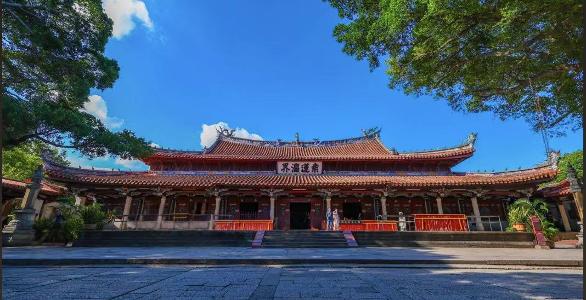

传奇：泉州开元寺是中国东南沿海重要的文物古迹，也是福建省内规模最大的佛教寺院。始建于唐垂拱二年（686年），初名"莲花寺"，开元二十六年（738年）唐玄宗下令全国各州建一寺，以年号为名，遂改称"开元寺"。寺院坐落在泉州市鲤城区西街，占地面积7.8万平方米，是"泉州：宋元中国的世界海洋商贸中心"22处遗产点中的重要组成部分，2021年被列入《世界遗产名录》。
核心看点：
游览攻略：
交通信息：开元寺位于泉州市鲤城区西街176号。公交2路、6路、14路、26路、40路等可达"开元寺"站。距泉州动车站8公里，车程20分钟；距晋江机场15公里，车程30分钟。周边有泉州西街、钟楼、清净寺、关岳庙等景点。建议与泉州海外交通史博物馆、清净寺、天后宫等组合游览。
建寺传说：唐垂拱二年（686年），泉州富商黄守恭梦见僧人索地建寺。僧云："欲得你地，待桑树生莲。"数日后，黄家园中桑树果然开出白莲。黄守恭感其灵异，问需地多少，僧答："一袈裟影足矣。"僧展袈裟，影遮园地。黄守恭遂舍园建寺，初名"莲花寺"。此即"桑莲献地"传说，开元寺故有"桑莲法界"之称。
唐代建寺：莲花寺建成后，成为泉州重要佛寺。长寿元年（692年），升为"兴教寺"。神龙元年（705年），改称"龙兴寺"。开元二十六年（738年），唐玄宗诏令全国各州建一寺，以年号为名，遂改称"开元寺"。唐代宗时（763-779年），高僧匡护法师住持开元寺，香火日盛。
五代扩建：五代时期，闽王王审知崇佛，增建开元寺，置田庄，铸金身。后唐同光三年（925年），王审知在寺内铸两尊铁佛，各高5.3米，重约5吨，为当时罕见。现一尊存福州开元寺，一尊存泉州开元寺。王审知还在寺内建木塔，即东西塔前身。
宋代鼎盛：北宋元祐年间（1086-1094年），泉州知府陈偁重修开元寺，增建戒坛。南宋绍兴二十五年（1155年），僧守静建法堂。淳熙间（1174-1189年），僧了性重建大雄宝殿。宝庆三年（1227年），僧法殊重建戒坛。宋代开元寺规模宏大，僧众数百，为闽南佛教中心。
元代扩建：元至元二十二年（1285年），寺主妙恩禅师奉旨合并泉州120所寺院，开元寺规模空前，僧众达千人。大德年间（1297-1307年），奉旨重修大雄宝殿，增建甘露戒坛、法堂、僧舍。元代泉州为国际大港，开元寺成为各国商人、海员祈福之地，寺内融入印度教、伊斯兰教、基督教等外来元素。
明清至今：明洪武三十一年（1398年），僧正映奉旨重修，增建藏经阁。万历二十二年（1594年），泉州知府程朝京、同知李梦祥重修大雄宝殿。清代多次修葺。1924年，住持转道和尚募资重修大雄宝殿、戒坛。1938-1942年，弘一法师驻锡开元寺。1982年，列为全国重点文物保护单位。2021年，作为"泉州：宋元中国的世界海洋商贸中心"遗产点列入《世界遗产名录》。
东西双塔结构：镇国塔（东塔）建于南宋嘉熙二年至淳祐十年（1238-1250年），高48.27米。仁寿塔（西塔）建于南宋绍定元年至嘉熙元年（1228-1237年），高45.06米。两塔均为五层八角仿木楼阁式石塔，由外壁、回廊、塔心柱组成。塔心柱为实心石柱，贯通全塔，增强稳定性。各层设四门四龛，门龛两侧浮雕菩萨、罗汉、护法神将等。塔檐用石材仿木斗拱，出檐深远。
大雄宝殿构造：大雄宝殿又称"百柱殿"，面阔九间（42.7米），进深九间（32.5米），面积1338平方米。殿内采用"减柱造"，原应有100根柱子，实际只有86根（其中16根为附柱），使殿内空间开阔。柱础为石雕莲花，柱身为花岗岩。梁架为穿斗式与抬梁式结合，用材粗大。屋顶为重檐歇山式，铺黄色琉璃瓦，正脊两端有鸱吻，脊中饰宝葫芦。
飞天乐伎：大雄宝殿斗拱间附雕24尊"飞天乐伎"，又称"迦陵频伽"（妙音鸟）。人身鸟足，背生双翼，手持乐器（琵琶、洞箫、唢呐、拍板等）或供品（花果、文房四宝）。东侧12尊手持泉州南音乐器，西侧12尊手持文房四宝。飞天乐伎融合佛教飞天、印度教天使与闽南建筑装饰，为中国古建筑孤例。
甘露戒坛：中国现存三大戒坛之一（北京戒台寺、杭州昭庆寺、泉州开元寺）。坛为八角攒尖顶，分五级，代表五分法身（戒、定、慧、解脱、解脱知见）。坛顶藻井结构复杂，斗拱层叠，不用一钉一铁，全为榫卯结构。藻井四周雕有24尊飞天，手持乐器，与戒坛24诸天相应。
石雕艺术：开元寺石雕丰富。①狮身人面浮雕：大雄宝殿月台须弥座有72幅，为元代印度教寺庙遗物；②印度教石柱：大雄宝殿后檐两根十六角形石柱，浮雕印度教神话；③塔身浮雕：东西塔各层门龛两侧浮雕佛像、菩萨、罗汉、护法等，共160尊；④碑刻：寺内有唐、宋、元、明、清碑刻数十通，记录寺院历史。
建筑特色：开元寺建筑体现闽南特色。①用材：石、木、砖结合，石柱、石塔、石雕为主；②结构：穿斗式与抬梁式结合，减柱造扩大空间；③装饰：木雕、石雕、砖雕、剪瓷雕并用，精美华丽；④色彩：红墙、黄瓦、白石，对比鲜明；⑤布局：中轴对称，主次分明，前塔后殿，殿坛结合。开元寺是闽南古建筑的杰出代表。
宋元泉州港：宋元时期，泉州为"东方第一大港"，海上丝绸之路的起点。开元寺位于泉州古城中心，是海商、船主、水手祈福的重要场所。寺内碑刻记载，许多海商捐资修建寺院，祈求海上平安。元代，泉州港与近百个国家有贸易往来，开元寺成为国际化的佛教寺院。
印度教遗存：大雄宝殿后檐两根十六角形石柱，柱身分上下段。上段四面浮雕印度教神话故事：①象鳄互斗：大象与鳄鱼搏斗，表现印度教创世神话；②毗湿奴化身：毗湿奴化身为野猪、人狮、侏儒等；③克利希那戏耍：黑天神克利希那童年嬉戏场景；④湿婆舞王：湿婆跳创造与毁灭之舞。这些石柱原属元代泉州印度教寺庙，后移入开元寺。
基督教遗物：寺内保存有古基督教（景教、也里可温）石刻。大雄宝殿后廊有"御赐佛像"碑，碑额刻十字架，碑文记载元代皇帝赐佛像事。另有景教墓碑，刻十字架、莲花、云纹等。这些遗物见证基督教在泉州的传播。
伊斯兰教痕迹：寺内有阿拉伯文石刻，内容为《古兰经》经文。另有伊斯兰风格花纹的石构件。元代泉州有众多阿拉伯、波斯商人，他们在泉州建清真寺，也参与佛教寺院的修建。
海商供养：开元寺碑刻记载了众多海商、船主的捐资记录。元代，泉州海商蒲寿庚家族曾捐资重修开元寺。明初，郑和第五次下西洋前，曾到开元寺祈求平安。清代，南洋华侨捐资修建檀樾祠、准提禅院。至今，东南亚华侨仍常回开元寺朝拜捐资。
弘一法师与南洋：近代高僧弘一法师在开元寺弘法期间，与南洋华侨往来密切。1938年，菲律宾华侨捐资修建"弘一法师纪念室"。弘一法师的律学著作，经南洋华侨资助刊印，流传海外。开元寺成为连接闽南与南洋的佛教文化纽带。
世界遗产价值：2021年7月25日，"泉州：宋元中国的世界海洋商贸中心"列入《世界遗产名录》，开元寺作为22处遗产点之一，符合世界遗产标准：①见证宋元泉州作为全球海洋贸易中心的繁荣；②展现佛教、印度教、基督教、伊斯兰教等多元宗教文化的交融；③是古代石构建筑与雕塑艺术的杰出范例；④体现中国与东南亚、印度、阿拉伯等地的文化交流。世界遗产委员会评价："泉州曾是10-14世纪世界海洋贸易网络中高度繁荣的商贸中心之一，作为宋元中国与世界文明的对话窗口，展现了完备的制度体系、发达的经济水平、以及包容的文化态度。"
历史价值：开元寺是泉州千年历史的见证。①建寺传说反映唐代泉州的社会状况；②历代修建记录泉州佛教发展；③宋元遗存见证泉州港的繁荣；④明清碑刻记录地方历史；⑤近代事迹反映佛教现代化。开元寺是研究泉州历史、宗教史、建筑史、海外交通史的重要实物资料。
建筑价值：开元寺是中国古代建筑的瑰宝。①东西双塔是中国现存最高的仿木楼阁式石塔，代表宋代石构建筑的最高水平；②大雄宝殿的"减柱造"结构，体现古代工匠的智慧；③甘露戒坛的藻井结构，为木构建筑杰作；④各类石雕、木雕、砖雕，艺术价值极高。开元寺是闽南古建筑的典范。
艺术价值：寺内保存大量艺术珍品。①雕塑：佛像、菩萨、罗汉、飞天等，造型优美，雕刻精细；②石刻：印度教神话浮雕、狮身人面像、碑刻等，内容丰富；③建筑装饰：斗拱、雀替、悬鱼、惹草等，工艺精湛；④书法：历代名家题匾、楹联、碑文等，书法艺术高超。开元寺是综合性的艺术宝库。
社会价值：开元寺在当代社会具有多重价值。①宗教价值：是闽南重要的佛教活动场所，信众众多；②教育价值：作为爱国主义教育基地、传统文化教育基地，对青少年进行教育；③旅游价值：是泉州最重要的旅游景点，年接待游客数百万人次；④研究价值：是建筑学、宗教学、历史学、艺术学的研究对象；⑤城市价值：是泉州的城市象征，东西塔是泉州地标。
保护与传承：开元寺得到有效保护。①法律保护：1982年列为全国重点文物保护单位；②规划保护：编制《泉州开元寺保护规划》，划定保护范围、建设控制地带；③工程保护：对古建筑进行抢险加固、维修保养，如1986-1990年重修大雄宝殿，2008-2012年全面修缮；④活态保护：保持宗教功能，僧众正常修行，信众正常朝拜；⑤研究展示：建立开元寺文化研究中心，举办学术研讨会，出版《泉州开元寺志》《开元寺研究》等著作；⑥旅游管理：控制游客数量，规范参观行为，实现保护与利用平衡。